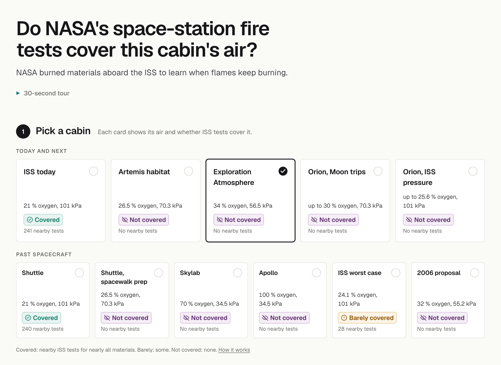
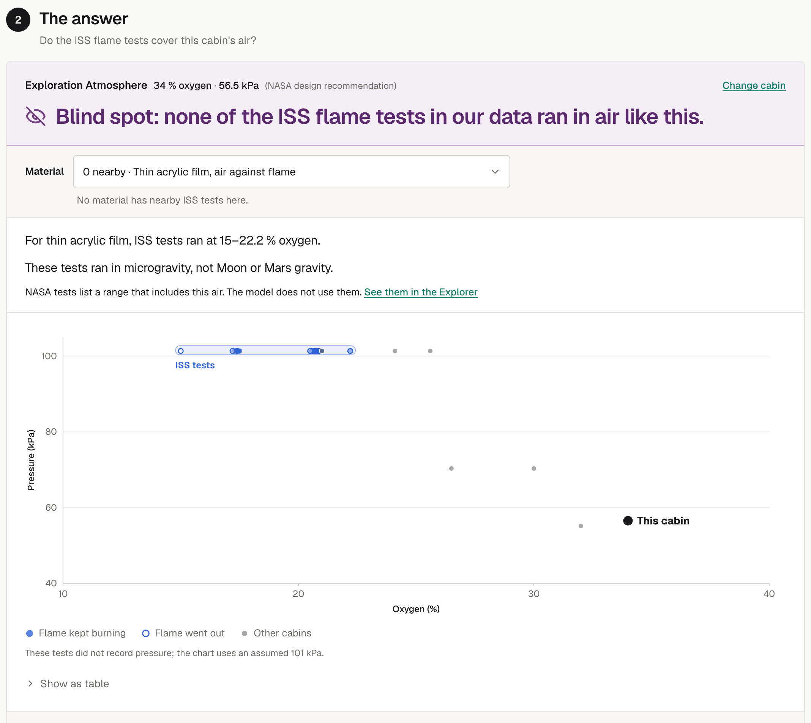
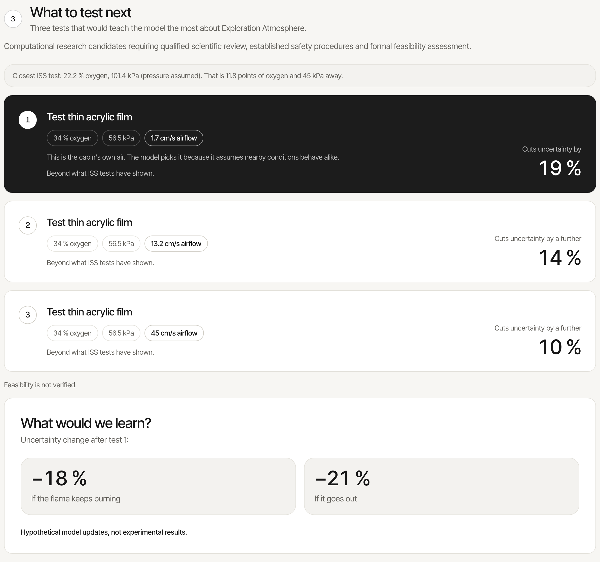

We wanted to know if NASA's ISS flame tests cover the air planned for Moon and Mars cabins.
Team Yareed · data: NASA (BASS, BASS-II)
The ISS tests in our data ran at 13.5–22.7 % oxygen and 98–102 kPa, so only today's ISS air sits inside that range.
The cabin air values come from NASA reports on NTRS (20140000417, 20220000245).
We put in 11 crew cabins, from Apollo to Artemis.

So the model won't guess there. We didn't fold in NASA's other ground tests.

Computational research candidates requiring qualified scientific review, established safety procedures and formal feasibility assessment.

What bugs us most is that every ISS test ran near sea-level pressure, and we have no partial-gravity data. This is not a certified fire-safety assessment.
Team Yareed. Data: NASA Physical Science Informatics (BASS, BASS-II; CC0). Cabin air: NASA NTRS.
Claude, by Anthropic, wrote much of the code and text. We directed the work, made the decisions and checked it, and every number comes from NASA data through the code. The app itself uses no generative AI. It is not endorsed by NASA and is not a certified fire-safety assessment.